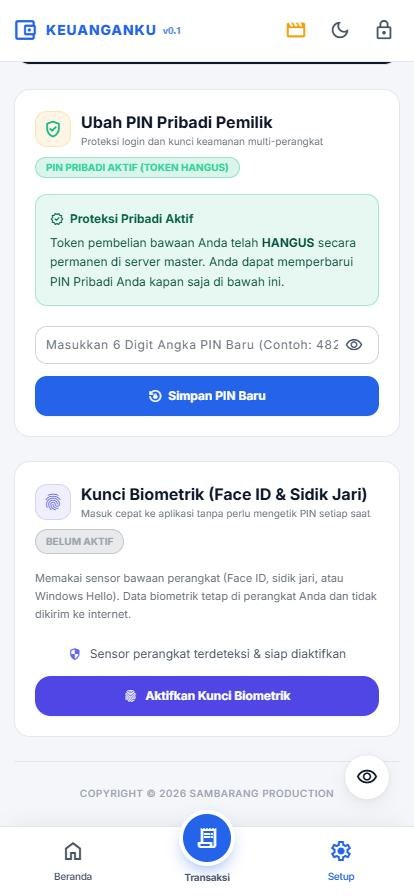
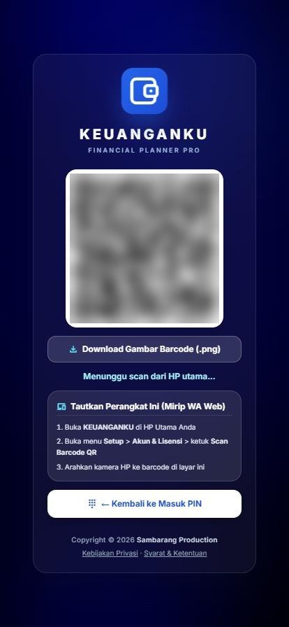
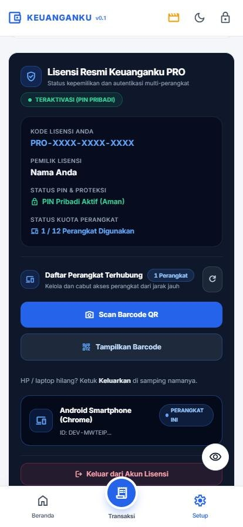
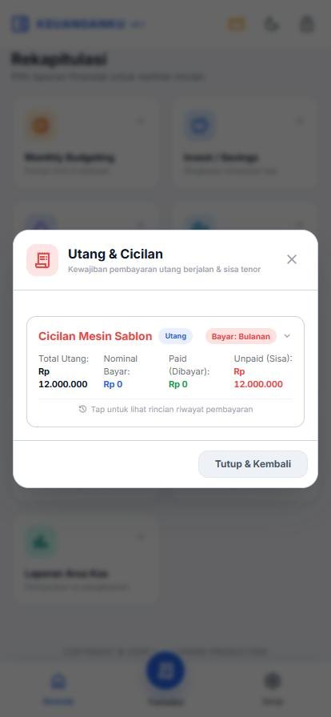
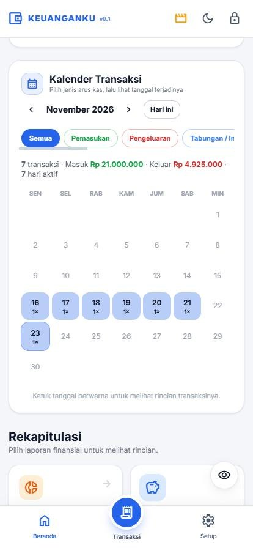
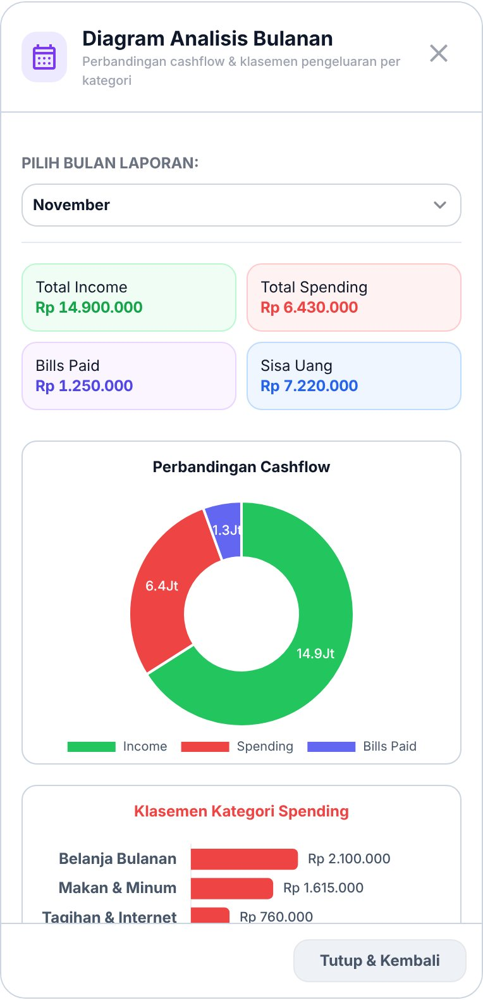

Ringkasan alur pemesanan & aktivasi
5 tahap- TAHAP 01Pemesanan online
Pilih paket di pesan.html, masukkan voucher & alamat Gmail aktif.
- TAHAP 02Kode unik transfer
Transfer pas dengan 2 angka unik terakhir (misal +01, +02) untuk verifikasi otomatis.
- TAHAP 03 · UTAMALisensi dikirim ke Gmail
Kode lisensi & tautan aktivasi dari keuangankupro@gmail.com.
- TAHAP 04Aktivasi & pasang
Masuk dengan Akun Google, database dibuat otomatis, lalu pasang ikon di layar utama.
- TAHAP 05PIN, biometrik & cloud
Buat PIN, aktifkan Face ID / sidik jari, dan masuk di perangkat lain.
Terima kode lisensi resmi via Gmail Jalur utama
Dikirim langsung dari keuangankupro@gmail.com ke alamat Gmail Anda setelah pembayaran terkonfirmasi.
Email berisi rincian akun lisensi Anda:
- Nama pembeli & email Google terdaftar sebagai tanda hak milik lisensi resmi.
- Kode token lisensi: kombinasi unik 16 karakter, contoh PRO-XXXX-XXXX-XXXX.
- Tautan akses cepat untuk membuka aplikasi tanpa mengetik token manual.
🎉 Lisensi Resmi Keuanganku PRO Anda Telah Aktif!
Halo Pelanggan Terhormat, terima kasih telah memilih Keuanganku PRO.
Buka tautan & aktivasi di perangkat pertama
Daftarkan HP utama atau laptop pertama Anda. Buka keuanganku.pro di Google Chrome, Safari, atau Microsoft Edge.
Cara A: Masuk dengan Akun Google Disarankan
- Di layar masuk, ketuk tab Perangkat Baru.
- Ketuk Masuk dengan Akun Google, pilih akun Google Anda, lalu izinkan.
- Pertama kali saja: jika akun belum ditautkan, masukkan Kode Token Lisensi dari email, lalu ketuk Aktivasi & Buka Database.
Cara B: Token lisensi + PIN
- Di tab Masuk PIN, ketuk Gunakan Keyboard.
- Ketik kode token dari email (PRO-XXXX-XXXX-XXXX), lalu ketuk MASUK APLIKASI.
- Jika token sudah pernah dipakai di HP utama, aplikasi akan meminta PIN Pribadi Anda.
Pasang aplikasi di HP & laptop
Ringan, gratis, dan selalu versi terbaru. Android: unduh aplikasinya (±1 MB). iPhone & laptop: pasang langsung dari browser.
- Ketuk tombol Unduh di atas dari HP Android.
- Buka file KEUANGANKU.apk dari notifikasi unduhan.
- Jika muncul peringatan sumber tidak dikenal, ketuk Setelan → aktifkan Izinkan dari sumber ini → kembali.
- Ketuk Instal, lalu Buka. Ikon KEUANGANKU muncul di layar HP.
Peringatan muncul karena aplikasi tidak diunduh dari Play Store, bukan karena berbahaya. Alternatif: buka keuanganku.pro di Chrome → titik tiga (⋮) → Instal aplikasi.
- Buka keuanganku.pro menggunakan browser Safari.
- Ketuk tombol Bagikan (kotak dengan panah ke atas) di bagian bawah.
- Gulir, pilih Tambah ke Layar Utama (Add to Home Screen).
- Ketuk Tambah di pojok kanan atas.
- Buka keuanganku.pro di Chrome atau Edge.
- Klik Instal App di pojok kanan atas aplikasi, atau ikon Instal di ujung kanan kolom alamat.
- Klik Instal.
- KEUANGANKU terbuka di jendela sendiri, ada di Start Menu & desktop, dan bisa disematkan ke Taskbar.
Mac: Chrome dengan cara yang sama, atau Safari → menu File → Add to Dock.
Kunci keamanan: PIN pribadi & biometrik Penting
Lindungi lisensi dari pembajakan dan masuk instan dengan Face ID / sidik jari.
4.1 Buat PIN pribadi baru (hanguskan token)
- Buka menu Setup di bilah navigasi bawah → tab Akun & Lisensi.
- Gulir ke kartu Ubah PIN Pribadi Pemilik.
- Ketik PIN baru 4–6 digit yang mudah Anda ingat tetapi sulit ditebak orang lain (contoh pola: 482916).
- Ketuk Simpan PIN Baru, lalu setujui konfirmasi Buat PIN & Hanguskan Token.
4.2 Aktifkan kunci biometrik
- Di menu Setup, gulir ke kartu Kunci Biometrik (Face ID & Sidik Jari).
- Ketuk Aktifkan Kunci Biometrik.
- Saat dialog keamanan perangkat muncul, tempelkan sidik jari atau tatap layar.

Database pribadi otomatis di Google Drive Gratis & privat
Data keuangan tersimpan di Google Drive Anda sendiri, tanpa server perantara pihak ketiga.

Otomatis lewat "Masuk dengan Akun Google"
Tidak perlu langkah tambahan. Begitu Anda masuk dengan Akun Google (Langkah 2), database pribadi langsung disiapkan. Tidak perlu membuat spreadsheet atau menyalin kode apa pun.
- Masuk dengan Google memakai akun yang sama di setiap perangkat.
- Database dibuat otomatis: file "Database Keuanganku PRO" muncul di Google Drive Anda, dan setiap transaksi tersimpan ke sana.
- Izin habis? Jika muncul "Ketuk ☁ untuk sinkron", ketuk ikon awan ☁ di bagian atas satu kali.
Cadangan: sinkron manual
Buka Setup → kartu Akun Google & Google Drive, lalu ketuk:
- Upload ke Drive untuk mengirim data di perangkat ini ke Google Drive.
- Tarik dari Drive untuk mengambil data terbaru dari Google Drive.
- Buka di Google Sheets ↗ untuk melihat atau mengunduh data ke Excel / Google Sheets kapan saja.
Khusus pengguna lama yang masih memakai Cloud Script
Pengguna baru tidak perlu bagian ini. Jika dulu Anda menyambungkan sinkron lewat Cloud Script (link Web App Google Apps Script), amankan script Anda dengan versi berkunci:
- Buka menu Setup → kartu Sinkronisasi Google Drive → ketuk Amankan Cloud Script.
- Salin kode yang ditampilkan.
- Tempel di editor Apps Script Anda (menggantikan kode lama), lalu simpan.
- Klik Terapkan → Kelola penerapan → edit → pilih Versi baru → Terapkan.
- Kembali ke aplikasi, lalu ketuk AKTIFKAN KUNCI.
Hubungkan perangkat 2, 3, dan seterusnya
Buka di laptop kantor, tablet, atau HP kedua secara instan tanpa input manual.
Metode 1: Masuk dengan Akun Google Paling praktis
- Buka keuanganku.pro di perangkat kedua.
- Ketuk tab Perangkat Baru → Masuk dengan Akun Google dengan akun Google yang sama.
- Selesai! Lisensi dan database langsung tersambung serta tersinkron otomatis.
Metode 2: Scan barcode QR (seperti WhatsApp Web)
- Di perangkat baru: buka aplikasi → tab Perangkat Baru → ketuk Tautkan via Barcode (QR). Barcode tampil di layar.
- Di HP utama: buka Setup → Akun & Lisensi → ketuk Scan Barcode QR.
- Arahkan kamera ke barcode, lalu setujui konfirmasi. Perangkat baru langsung terhubung.
Metode 3: Token lisensi + PIN pribadi
- Di perangkat baru, tab Masuk PIN → ketuk Gunakan Keyboard.
- Ketik kode token (PRO-XXXX-XXXX-XXXX) → ketuk MASUK APLIKASI.
- Masukkan PIN Pribadi yang sudah Anda buat di HP utama.


Fitur keuangan sehari-hari
Mencatat transaksi, mutasi saldo, anggaran, utang & cicilan, kalender, dan rekapitulasi.
Catat pemasukan & pengeluaran
Ketuk tombol bulat Transaksi di tengah menu bawah. Isi nama, nominal, tipe cashflow, kategori, dan akun; lampirkan foto struk bila perlu, lalu simpan.
Cepat, ± 5 detik
Mutasi antar rekening & dompet
Tarik tunai dari ATM ke dompet fisik, atau transfer dari bank ke e-wallet (GoPay/OVO/DANA), tanpa mengubah total kekayaan bersih Anda. Saldo setiap akun terlihat di Beranda.
Saldo terkalkulasi otomatis
Anggaran & batas belanja
Atur pos pengeluaran, tagihan, tabungan, dan cicilan di Setup → Kategori & Saldo. Rekap Monthly Budgeting menampilkan yang sudah terpakai dan sisa anggaran bulan ini, lengkap dengan tanda OVER.
Anti-boncos
Utang, piutang & pengingat jatuh tempo
Catat piutang atau cicilan Anda. Aplikasi menampilkan pengingat (dan notifikasi perangkat) saat jatuh tempo mendekat. Sudah dibayar? Ketuk ✕ pada pengingat untuk menyembunyikannya sampai periode berikutnya.
Bebas denda keterlambatan
Kalender transaksi
- Di Beranda, cari kartu Kalender Transaksi.
- Pilih jenis arus kas (pemasukan, pengeluaran, dll.).
- Ketuk tanggal berwarna untuk melihat transaksinya.

Rekapitulasi lengkap
Gulir ke bagian bawah Beranda untuk melihat Rekapitulasi: anggaran bulanan, tabungan, sinking fund, financial goals, utang & cicilan, hingga laporan arus kas. Ketuk kartu untuk melihat rinciannya.
Semua ringkasan di satu tempat
Manajemen perangkat & tanya jawab
Cabut akses jarak jauh jika HP hilang atau berganti perangkat, serta solusi kendala umum.
Cabut akses jarak jauh (keluarkan perangkat)
Di Setup → Akun & Lisensi → Daftar Perangkat Terhubung, Anda dapat memantau semua HP & laptop yang aktif. Jika perangkat hilang atau diganti:
- Ketuk tombol merah Keluarkan di samping nama perangkat tersebut.
- Dalam beberapa detik perangkat itu menampilkan "Perangkat Anda dikeluarkan", data keuangannya dihapus dari perangkat itu (tetap aman di cloud), dan kuota lisensi langsung bebas.
- Untuk memakainya kembali: ketuk Masuk dengan Akun Google di perangkat itu, lalu setujui pertanyaan "Izinkan?" di HP / laptop yang masih terhubung. Bisa juga lewat scan QR.
Pertanyaan yang sering diajukan
Mengapa di HP Android yang muncul sidik jari, bukan Face ID?
Apakah batas perangkat tetap berlaku saat masuk dengan Google?
Apakah bisa dipakai saat tidak ada internet?
Izin Google habis, apa yang harus dilakukan?
Email lisensi tidak kunjung masuk?
Siap mengatur keuangan?
Buka aplikasi sekarang, atau pesan lisensi jika belum memiliki.